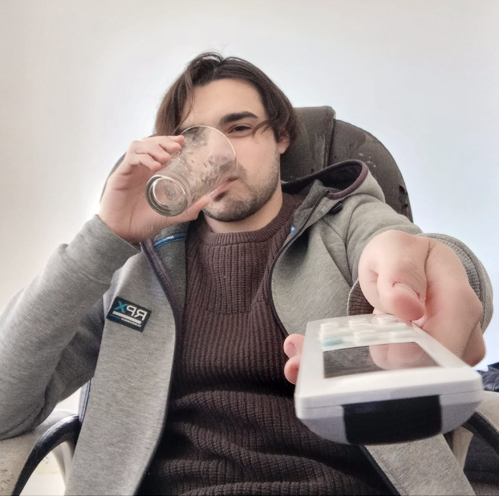
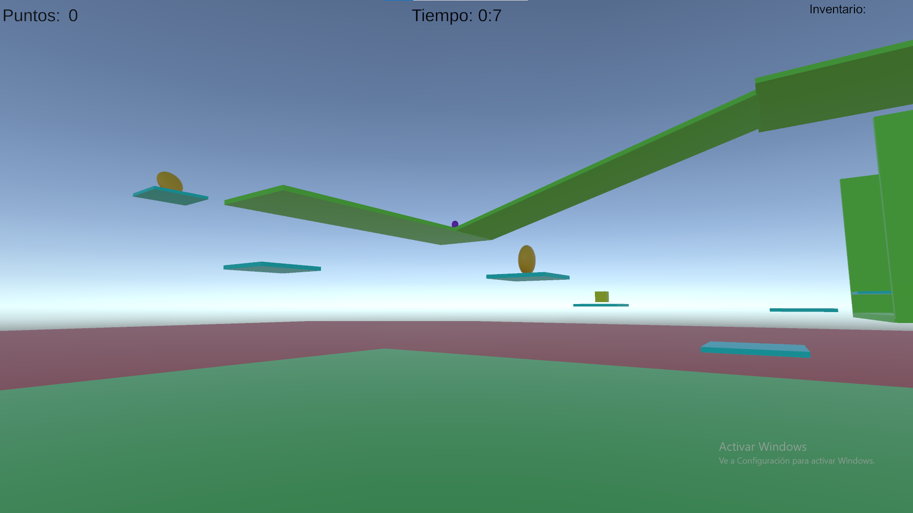

Conoce a Bonami
Valentin Uriel Davalos Vitasse bulgarmente conocido como Bonami es un joven adulto de 23 años de edad, nacio el 6 de Enero del 2002 desde su más temprana edad mostro mucha facinacion por el mundo ludico, siendo un amante de los juegos de mesa como lo son el Ajedrez, Damas, Ludo, Uno, TEG, Ect. A la edad de 8 años conoceria el mundo de los videojuegos, sus primeros contactos fueron con consolas como, la Famicom, Sega Genesis, Playstation 2 y su primera consola propia la cual seria la Playstation 3 por el cual se volvio un aficionado en este mundo probando multiples titulos.
Cuando llego a su adultez se meteria en la Universidad Nacional de Joses Clemente Paz en la carrera de Diseño y Produccion de desarrollo de videojuegos con el sueño de poder hacer sus propios juegos, durante su recorrido se ha topado con multiples materias que le dieron una vision más amplia y profunda de lo que eran los juegos y videojuegos, explorando el ambito filosofico con Cultura ludica y lo tecnico y artistico con Diseño ludico. Teniendo cuenta todo este conocimiento veria que detras de un juego hay mucho mas que unas simples piezas, pixeles o un mero entretenimiento y ahora con este saber se inscribiria en Fundamentos de la programacion para iniciar su recorrido como un desarrollador hecho y derecho.
Redes sociales

Lista de juegos creados
Durante su trayectoria por la materia de Fundamentos de la Programacion 1 Bonami adquirio multiples
conocimientos de la programacion, aprendiendo desde lo mas basico con Scratch, siguiendo con RPG
Maker y el lenguaje que mas dificil que vio fue Unity.
Con estos tres motores de programacion crearia 3 proyectos en total poniendo en practica lo
aprendido durante toda la cursada y dejando sus versiones jugables para probarlas.

Cube Adventure
El primer juego creado por Bonami. Fue diseñado en Scratch, es un plataformero en 2D en donde somos un cubo que debe sortear obstaculos para llegar a la meta.

City Escape
El segundo juego creado por Bonami. Fue diseñado en RPG Maker, este es un rpg de aventura que nos pone en el lugar de cuatro personajes que llegaron a una ciudad y luego de ciertos sucesos deberan encontrar la forma de escapar.
Bounce
El tercer juego creado por Bonami. Fue diseñado en Unity, es un plataformero en 3D en donde somos una esfera que debera ir salando de plataforma en pltaforma recolectando items y llegar a la meta sin caernos e el proceso.
Capturas de pantalla
Cube Adventure


RPG Maker


Bounce
